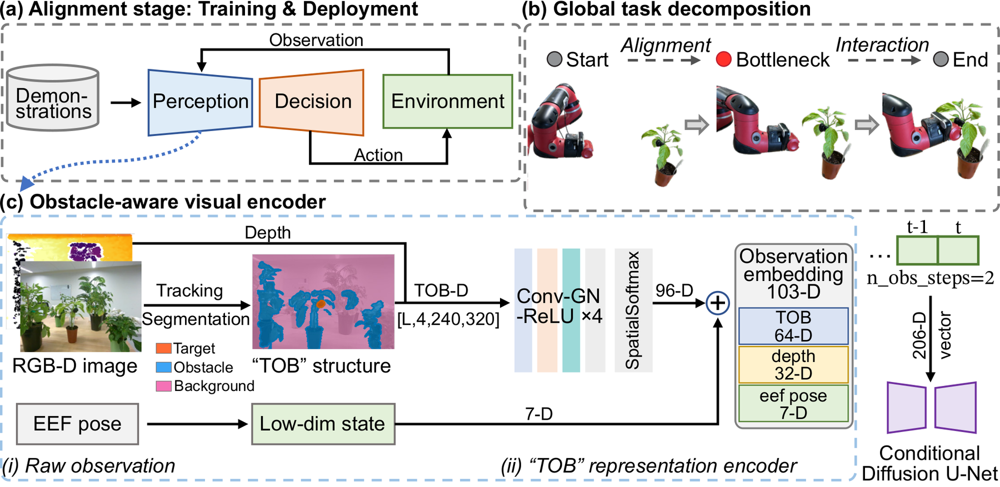
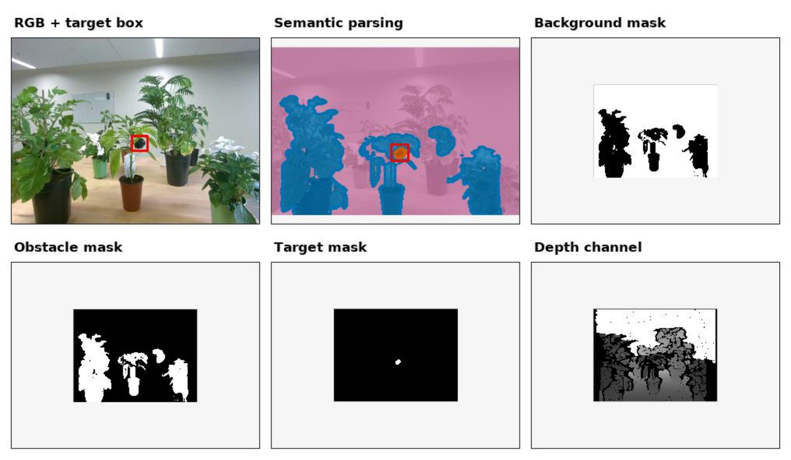
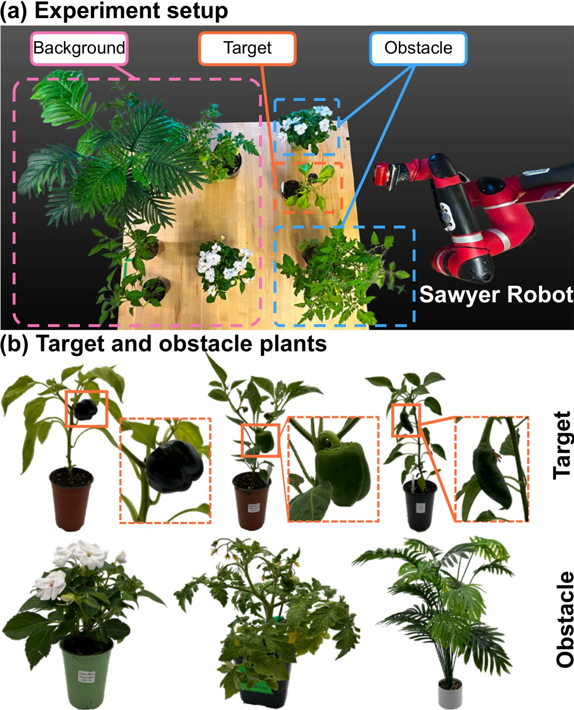
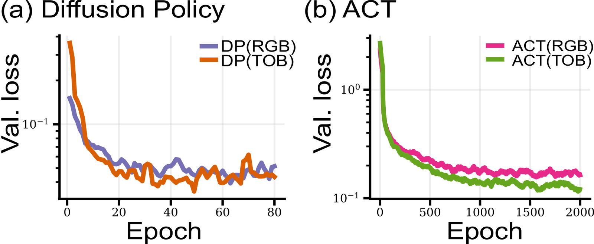

Abstract
Imitation learning has achieved impressive results in robotic manipulation, yet most existing approaches assume clean backgrounds and lack explicit mechanisms for obstacle-aware motion generation. Extending such policies to cluttered, real-world scenes with unstructured obstacles remains a key generalization challenge. We present ObstaDiff, a decomposed diffusion-policy framework with a lightweight obstacle-aware visual encoder. ObstaDiff extracts a structured target–obstacle–background representation, enabling the downstream alignment policy to generate end-effector trajectories toward a target-centered bottleneck pose while reasoning about surrounding obstacles. We evaluate ObstaDiff on 61 real-robot greenhouse trials per method (366 executions in total). ObstaDiff achieves 75.41% average task success and 8.20% average obstacle collision rate, outperforming representative imitation-learning baselines and improving generalization in cluttered agricultural scenes.
Method

Eye-in-hand RGB-D observations are converted into a structured TOB representation and encoded with robot state into a 103-D conditioning vector for a diffusion policy. The policy performs obstacle-aware alignment to a target-centered bottleneck pose, after which replayed actions execute close-range interaction.
Target–obstacle–background observation
A fine-tuned YOLOv8s-Worldv2 open-vocabulary detector marks target and obstacle regions in each eye-in-hand frame; everything else is background. The three binary masks are stacked with the aligned, normalized depth image, exposing exactly the scene semantics that matter for obstacle-aware alignment.
Structured observation encoder
Instead of a generic image backbone, a lightweight encoder keeps semantic masks and depth in separate branches with spatial softmax, producing a 64-D TOB feature and a 32-D depth feature that are combined with the 7-D end-effector pose into a 103-D embedding per observation step.
Bottleneck switching and replay
The diffusion policy only learns alignment. A data-driven criterion picks the closest replay in an interaction library and switches once the live target matches it, then replays that interaction relative to the bottleneck. Changing the library changes the task without retraining.

TOB preprocessing. Raw RGB with target box, semantic parsing, background, obstacle, and target masks, and normalized depth. The policy input stacks the three masks with depth.

Experimental setup. (a) Indoor greenhouse testbed with a Sawyer robot, target pepper, background plants, and obstacle plants. (b) Target pepper plants and obstacle plants used in the experiments.

TOB stabilizes training. TOB reduces validation loss, but the ACT (TOB) real-robot results show that lower supervised loss alone does not guarantee higher task success.
Real-Robot Results
Each method runs the same 61 trials on a 7-DoF Sawyer with an eye-in-hand RealSense D455: TPG (target-pose generalization, 20 trials), OLG (obstacle-layout generalization, 21 trials), and TAG (target-appearance generalization with two unseen green pepper varieties, 20 trials), 366 real-robot executions in total.
| Method | TSR (%) ↑ | OCR (%) ↓ | TCT (s) ↓ | Smooth (10−4) ↓ | ||||||
|---|---|---|---|---|---|---|---|---|---|---|
| TPG | OLG | TAG | Mean | TPG | OLG | TAG | Mean | |||
| ACT (RGB) | 40.00 | 52.38 | 45.00 | 45.90 | 25.00 | 14.29 | 5.00 | 14.75 | 20.77 | 1.16 |
| ACT (TOB) | 30.00 | 66.67 | 25.00 | 40.98 | 15.00 | 14.29 | 5.00 | 11.48 | 18.38 | 0.77 |
| DP (RGB) | 55.00 | 42.86 | 50.00 | 49.18 | 35.00 | 33.33 | 10.00 | 26.23 | 18.41 | 1.35 |
| DP (RGB-D) | 60.00 | 42.86 | 50.00 | 50.82 | 35.00 | 33.33 | 10.00 | 26.23 | 18.67 | 1.34 |
| DP (TOB) | 55.00 | 38.10 | 45.00 | 45.90 | 30.00 | 38.10 | 15.00 | 27.87 | 18.17 | 1.19 |
| ObstaDiff (ours) | 75.00 | 71.43 | 80.00 | 75.41 | 5.00 | 19.05 | 0.00 | 8.20 | 15.57 | 1.13 |
TSR: task success rate. OCR: obstacle collision rate. Means are over the 61 pooled trials. TCT (task completion time) and trajectory smoothness are computed over successful TPG trials. Best results in bold.
BibTeX
@inproceedings{wang2026obstadiff,
title = {ObstaDiff: Generalizable Diffusion Policy Learning via Obstacle-aware Representations},
author = {Wang, Jiawen and Yao, Kevin and Jawed, Khalid},
booktitle = {Conference on Robot Learning (CoRL)},
year = {2026}
}